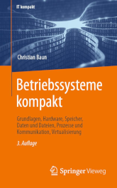

|
|


|
Die Hauptaufgabe eines Betriebssystems ist die Steuerung und Verwaltung der Betriebsmittel eines Rechnersystems sowie die Verteilung dieser Ressourcen an die Benutzer. Zu den Betriebsmitteln gehören Prozessoren, Hauptspeicher, Dateien, Ein-/Ausgabegeräte und Netzwerkdienste und generell alle Ressourcen, die mit dem Rechnersystem verbunden sind. Zusätzlich stellt ein Betriebssystem die Benutzerschnittstelle zur Steuerung des Systems sowie Schutzmechanismen, Werkzeuge, Bibliotheken und Entwicklungswerkzeuge bereit. Rechnernetze ermöglichen den Zusammenschluss eigenständiger Computersysteme zur Kommunikation und gemeinsamen Nutzung von Ressourcen. Die Kommunikation in Computernetzen erfolgt über verschiedene Protokolle, die über verschiedene Schichtenmodelle (OSI-Referenzmodell, TCP/IP-Referenzmodell, hybrides Modell) strukturiert werden können. Das Ziel dieser Vorlesung ist die Vermittlung der Grundlagen, Prinzipien, Probleme, und Lösungen, kurz gesagt der Konzepte auf denen die klassischen und modernen Betriebssysteme basieren. Zudem findet eine Einführung in die Grundlagen der Rechnernetze statt. Abschließend wird eine Auswahl bekannter Protokollen und ihre Klassifikation in die etablierten Referenzmodelle besprochen. Der Schwerpunkt des Themenbereichs Rechnernetze ist die Beschreibung des Transports von Daten durch die unterschiedlichen Protokollebenen und Übertragungsmedien. Die komplette Vorlesung (inkl. Übungen und Klausur) findet in deutscher Sprache statt. Die Betreuung der Übungen und die Abnahme von Werkstück A geschieht im SS2024 in Zusammenarbeit mit Benedikt Möller, Mert Kaan Demirel und Wei Yin Shing. Die Vorlesungsunterlagen zum Teil Betriebssysteme basieren auf der 3. Auflage des Buches Betriebssysteme kompakt (ISBN: 978-3-662-64717-2), das im Juni 2022 bei Springer Vieweg erschienen ist. Die Vorlesungsunterlagen zum Teil Computernetze basieren auf der 6. Auflage des Buches Computernetze kompakt (ISBN: 978-3-662-65362-3), das im Herbst 2022 bei Springer Vieweg erschienen ist.
|
Übungstermine sind...
| Datum | Zeit | Raum | Veranstaltung | Inhalte |
|---|---|---|---|---|
| 18.04.2024 | 10:00-11:30 | Audimax | Vorlesung | Foliensatz 1 (komplett) |
| 25.04.2024 | 10:00-11:30 | Audimax | Vorlesung | Foliensatz 2 (Folien 1-34) |
| 29.04.2024 | ----- | ----- | ----- | Frist (Deadline) zur Anmeldung der Portfolioprüfung beim Prüfungsamt. Nachträgliche Anmeldungen sind nicht möglich! |
| 02.05.2024 | 10:00-11:30 | Audimax | Vorlesung | Foliensatz 2 (Folien 35-47) + Foliensatz 3 (Folien 1-11) |
| 06.05.2024 | ----- | ----- | ----- | Frist (Deadline) zur Abgabe der erste Lösungsskizze für Werkstück A der Portfolioprüfung in campUAS |
| 09.05.2024 | ----- | ----- | ----- | Christi Himmelfahrt |
| 16.05.2024 | 10:00-11:30 | Audimax | Vorlesung | Foliensatz 3 (Folien 12-29) |
| 23.05.2024 | 10:00-11:30 | Audimax | Vorlesung | Foliensatz 3 (Folien 30-43) + Foliensatz 4 (Folien 1-10) |
| 30.05.2024 | ----- | ----- | ----- | Fronleichnam |
| 06.06.2024 | 10:00-11:30 | Audimax | Vorlesung | Foliensatz 4 (Folien 11-37) |
| 13.06.2024 | 10:00-11:30 | BCN-331 | Vorlesung | Foliensatz 4 (Folien 38-49) + Foliensatz 5 (komplett) |
| 20.06.2024 | 10:00-11:30 | 4-111/112 | Vorlesung | Foliensatz 6 (Folien 1-39) |
| 27.06.2024 | 10:00-11:30 | Audimax | Vorlesung | Foliensatz 6 (Folien 40-76) |
| 30.06.2024 | ----- | ----- | ----- | Frist (Deadline) zur Abgabe der Dokumentation, der Präsentationsfolien und des Quellcodes von Werkstück A der Portfolioprüfung in campUAS |
| 04.07.2024 | 10:00-11:30 | Audimax | Vorlesung | Foliensatz 7 (komplett) + Foliensatz 8 (Folien 1-7) |
| 11.07.2024 | 10:00-11:30 | Audimax | Vorlesung | Foliensatz 8 (Folien 8-24) + Foliensatz 9 (Folien 1-24) |
| 18.07.2024 | 10:00-11:30 | Audimax | Vorlesung | Foliensatz 9 (Folien 25-37) |
| 31.07.2024 | 12:00-13:00 | 10-MZH | Klausur | Die Klausur deckt die Foliensätze 1-9 und die Übungsblätter 1-9 ab |
Im SS2024 haben 32 Gruppen mit insgesamt 135 Teilnehmerinnen und Teilnehmern das Werkstück A präsentiert.
| Termin | Datum | Tag | Raum | Uhrzeit | Gruppe | Thema | Prüfer |
|---|---|---|---|---|---|---|---|
| 1 | 27.06.2024 | Donnerstag | 1-234 | 12:00-12:40 | Bandura, Walz, Dillemuth, Fleischer, Turkmani | Buzzword-Bingo-Spiel mit IPC | Baun |
| 2 | 03.07.2024 | Mittwoch | 1-234 | 10:00-11:30 | Popp, Ismael, Bagci, Dominguez | Speicherverwaltung | Baun |
| 3 | 03.07.2024 | Mittwoch | 1-234 | 10:00-11:30 | Aldebes, Mansour, Idbayyis, Raslan | Speicherverwaltung | Baun |
| 4 | 18.07.2024 | Donnerstag | 1-234 | 11:45-13:15 | Oguz, Kiossidis, Cicek, Khan, Aslan | Multilevel-Feedback-Scheduling | Baun |
| 5 | 03.07.2024 | Mittwoch | 1-234 | 11:45-13:15 | Asad, Khan, San, Bazra | Multilevel-Feedback-Scheduling | Baun |
| 6 | 03.07.2024 | Mittwoch | 1-234 | 11:45-13:15 | Camerino do Nascimento, Ramezankhani, Pal, Nguyen, Qasem | Multilevel-Feedback-Scheduling | Baun |
| 7 | 04.07.2024 | Donnerstag | 1-234 | 11:45-13:15 | Hasanli, Metuka, Gashi, Duku, Bouda | Buzzword-Bingo-Spiel mit IPC | Baun |
| 8 | 04.07.2024 | Donnerstag | 1-234 | 11:45-13:15 | Tahmas, Karisik, Gohl, Irhzal, Tayef | Buzzword-Bingo-Spiel mit IPC | Baun |
| 9 | 04.07.2024 | Donnerstag | 1-234 | 11:45-13:15 | Erdogan, Ehmler, Franke, Babayev, Inal | Buzzword-Bingo-Spiel mit IPC | Baun |
| 10 | 04.07.2024 | Donnerstag | 1-234 | 14:15-15:45 | Moldovan, Nguyen, Dolatabadian, Nurbekova, Pham | Buzzword-Bingo-Spiel mit IPC | Baun |
| 11 | 04.07.2024 | Donnerstag | 1-234 | 14:15-15:45 | Adnane, Čovrk, Khan, Tahanur, Zadran | Buzzword-Bingo-Spiel mit IPC | Baun |
| 12 | 08.07.2024 | Montag | 1-129 | 16:00-17:30 | Reyaz, Zamangör, Baryinti, Ahmadzai, Johar | Client-Server-Anwendung | Möller |
| 13 | 08.07.2024 | Montag | 1-129 | 16:00-17:30 | Al Hahbare, Wafa, Nemar, Kamali Tabrizi, Asadi | Client-Server-Anwendung | Möller |
| 14 | 08.07.2024 | Montag | 1-129 | 16:00-17:30 | Raufi, Duman, Ali, Zafar | Client-Server-Anwendung | Möller |
| 15 | 08.07.2024 | Montag | 1-129 | 17:45-19:15 | Afzali, Eckert, Fellermeier, Sultan | Client-Server-Anwendung | Möller |
| 16 | 10.07.2024 | Mittwoch | 1-234 | 10:00-11:30 | Matzollek, Naruszko, Bahr, Nguyen, Islek | Buzzword-Bingo-Spiel mit IPC | Baun |
| 17 | 10.07.2024 | Mittwoch | 1-234 | 10:00-11:30 | Ahtisham, Capraz, Belanos Beyloune, Alhaj Ahmad, Huh | Buzzword-Bingo-Spiel mit IPC | Baun |
| 18 | 10.07.2024 | Mittwoch | 1-234 | 10:00-11:30 | Schäfer, Weber, Gönner, Boukayoua, Urban | Buzzword-Bingo-Spiel mit IPC | Baun |
| 19 | 10.07.2024 | Mittwoch | 1-234 | 11:45-13:15 | Altahir, Melha, Dawood, Madaan, Ahmad | Buzzword-Bingo-Spiel mit IPC | Baun |
| 20 | 10.07.2024 | Mittwoch | 1-234 | 11:45-13:15 | Abbou, Talib, Akhouaji, Chair, Akarhiou | Buzzword-Bingo-Spiel mit IPC | Baun |
| 21 | 18.07.2024 | Donnerstag | 1-234 | 11:45-13:15 | Yilmaz, Bokemaer, Baykanoglu | Buzzword-Bingo-Spiel mit IPC | Baun |
| 22 | 11.07.2024 | Donnerstag | 1-234 | 14:15-15:45 | Muheisen, Badrash | Buzzword-Bingo-Spiel mit IPC | Baun |
| 23 | 11.07.2024 | Donnerstag | 1-234 | 14:15-15:45 | Kakkar, Wafa | Buzzword-Bingo-Spiel mit IPC | Baun |
| 24 | 15.07.2024 | Montag | 1-129 | 16:00-17:30 | Yigen, Al Twal, Steffens, Rezaie-Ghalandar, Marjan | Deadlock-Erkennung mit Matrizen | Möller |
| 25 | 15.07.2024 | Montag | 1-129 | 16:00-17:30 | Sabri, Uslu, Köse, Da Silva | Deadlock-Erkennung mit Matrizen | Möller |
| 26 | 15.07.2024 | Montag | 1-129 | 16:00-17:30 | Akhouaji, Shabbir, Boukbib Touhir, Hossain | Deadlock-Erkennung mit Matrizen | Möller |
| 27 | 15.07.2024 | Montag | 1-129 | 17:45-19:15 | Sucagi, Feller | Deadlock-Erkennung mit Matrizen | Möller |
| 28 | 15.07.2024 | Montag | 1-129 | 17:45-19:15 | Kulaksiz, Kelati | Deadlock-Erkennung mit Matrizen | Möller |
| 29 | 17.07.2024 | Mittwoch | 1-234 | 10:00-11:30 | Bonner, Kerwel, Düvel, Wischnewski | Interprozesskommunikation | Baun |
| 30 | 17.07.2024 | Mittwoch | 1-234 | 10:00-11:30 | Afkir, Zaher, Zaatan, Ibrahinkhel | Interprozesskommunikation | Baun |
| 31 | 17.07.2024 | Mittwoch | 1-234 | 11:45-13:15 | Seker, Akcora, Künkel, Karahan | Interprozesskommunikation | Baun |
| 32 | 17.07.2024 | Mittwoch | 1-234 | 11:45-13:15 | Alkan, Badwal, Batniji, Yurtsever | Interprozesskommunikation | Baun |
| Foliensätze | Übungsblätter | Lösungen | Themen |
|---|---|---|---|
| Foliensatz 1 | Übungsblatt 1 | Lösung | Organisatorisches, Literatur, Generationen von Computersystemen und Betriebssystemen, Klassifikationen, Einzelprogrammbetrieb, Mehrprogrammbetrieb, Einzelbenutzerbetrieb, Mehrbenutzerbetrieb, Kernelarchitekturen |
| Foliensatz 2 | Übungsblatt 2 | Lösung | Speicher, Speicherhierarchie, Ersetzungsstrategien, Speicherverwaltung, Real Mode, Protected Mode, virtueller Speicher |
| Foliensatz 3 | Übungsblatt 3 | Lösung | Dateien, Dateisysteme, Verzeichnisse, Blockadressierung, Journaling, Extents |
| Foliensatz 4 | Übungsblatt 4 | Lösung | Prozesse, Prozesskontext, Zustands-Prozessmodelle, Prozessverwaltung, Prozesse erzeugen und löschen, Systemaufrufe |
| Foliensatz 5 | Übungsblatt 5 | Lösung | Unterbrechungen, Dispatcher, Scheduling-Verfahren |
| Foliensatz 6 | Übungsblatt 6 | Lösung | Prozessinteraktion, Synchronisation von Prozessen, Kommunikation zwischen Prozessen, Kooperation von Prozessen |
| Beispiel zu gemeinsamen Speichersegmenten - Shared Memory Segments (System V) | |||
| Beispiel zu gemeinsamen Speichersegmenten - Shared Memory Segments (POSIX) | |||
| Beispiel zu Nachrichtenwarteschlangen - Message Queues (System V) | |||
| Beispiel zu Nachrichtenwarteschlangen - Message Queues (POSIX) | |||
| Beispiel zu anonymen Pipes | |||
| Beispiel zu benannten Pipes | |||
| Beispiel zu TCP-Sockets (Server) | |||
| Beispiel zu TCP-Sockets (Client) | |||
| Beispiel zu UDP-Sockets (Server) | |||
| Beispiel zu UDP-Sockets (Client) | |||
| Beispiel zu Semaphoren (System V) | |||
| Beispiel zu benannten Semaphoren (POSIX) | |||
| Foliensatz 7 | Übungsblatt 7 | Lösung | Grundlagen der Computervernetzung, Protokolle und Referenzmodelle |
| Foliensatz 8 | Übungsblatt 8 | Lösung | Bitübertragungsschicht - Physical Layer |
| Foliensatz 9 | Übungsblatt 9 | Lösung | Sicherungsschicht - Data Link Layer |
| Foliensatz 10 | Übungsblatt 10 | Lösung | Vermittlungsschicht - Network Layer |
| Foliensatz 11 | Übungsblatt 11 | Lösung | Transportschicht - Transport Layer |
| Foliensatz 12 | Übungsblatt 12 | Lösung | Anwendungsschicht - Application Layer |
Sie müssen EINE Aufgabe bis zum Ende des Semesters erfolgreich bearbeiten (inkl. schriftlicher Ausarbeitung, Abnahme und Präsentation)!
| Werkstück A | Maximale Gruppengröße | Themengebiet | Erlaubte Programmiersprachen |
|---|---|---|---|
| Alternative 1 | 4 oder 5 Personen | Speicherverwaltung bzw. Speicherpartitionierung (siehe Foliensatz 2) | Bash, C |
| Alternative 2 | 5 Personen | Multilevel-Feedback-Scheduling (siehe Foliensatz 5) | Bash, C, Python |
| Alternative 3 | 5 Personen | Buzzword-Bingo-Spiel mit Interprozesskommunikation (siehe Foliensätze 4+6) | Bash, C, Python |
| Alternative 4 | 4 oder 5 Personen | Client-Server-Anwendung (siehe Foliensätze 7-12) | Python |
| Alternative 5 | 4 oder 5 Personen | Deadlock-Erkennung mit Matrizen (siehe Foliensatz 6) | Bash, C, Python |
| Alternative 6 | 4 Personen | Interprozesskommunikation (siehe Foliensatz 6) | C, Python |
Eine Vorlage (ZIP, PDF) für die Ausarbeitung von Werkstück A ist verfügbar. Die Vorlage nutzt das LaTeX-Makropaket lncs (Lecture Notes in Computer Science) des Springer-Verlags. Henry Cocos hat eine sehr schöne LaTeX-Vorlage für Präsentationsfolien mit LaTeX-Beamer erstellt.
Die Verwendung dieser Vorlagen ist nicht zwingend erforderlich. Es ist aber eine gute Gelegenheit, die Erstellung optisch ansprechender Dokumentationen und Präsentationen zu erlernen. Alle großen Linux-Distributionen bringen LaTeX-Pakete mit. Es gibt schier endlos viel Literatur und Tutorials für den Einstieg in LaTeX. Ein kostenfrei verfügbares eBook, das auch im Quellcode vorliegt, ist Ein Einstieg in LaTeX (GitHub).
Unter Windows sind die LaTeX-Distributionen MiKTeX und TeX Live bekannt. Für Mac OS gibt es MacTeX. LaTeX-Dokumente können mit jedem Editor bearbeitet werden.
Diese Dokumentation sind ein guter Einstieg, wenn Sie wenig oder gar kein Vorwissen zu den Themengebieten Linux-Systemadministration und Shell-Programmierung haben. Diese Dokumentation ist nicht klausurrelevant.
| Linux und Shell-Programmierung - Teil 1 | Organisatorisches, Einführung, Hilfesystem, Verzeichnisse, Dateien |
| Linux und Shell-Programmierung - Teil 2 | Systemverwaltung, Zugriffsrechte, Verweise, Dateien durchsuchen, Editoren, Prozesse |
| Linux und Shell-Programmierung - Teil 3 | Datum und Uhrzeit, Ein-/Ausgaben umleiten, Zeichen zählen, Alias, Dateien suchen, Kommandos zeitsteuern |
| Linux und Shell-Programmierung - Teil 4 | Ressourcen überwachen, Sortieren, Umgebungsvariablen, Textausgaben, Mustervergleiche, Texte auswerten |
| Linux und Shell-Programmierung - Teil 5 | Grundlagen der Shell und von Shell-Skripten, Vergleichsoperationel, Kontrollstrukturen, Schleifen |
| Linux und Shell-Programmierung - Teil 6 | Arithmetik auswerten, Funktionen, Funktionsbibliotheken, Auswahlmenüs |
| Anleitung für Windows Subsystem für Linux v2 (WSL2) | Eine sehr gut verständliche und detaillierte Anleitung zur Installation von Linux mit WSL2 von David Hundeshagen |
Da Werkstück A der Portfolioprüfung schon eine praktische Leistung ist, wird Werkstück B (die Klausur über 60 Minuten) im SS2024 keine praktischen Aufgaben enthalten. Konzentrieren Sie sich bei der Vorbereitung auf die Klausur ganz auf die theoretischen Aufgaben in den Übungsblättern.
| Semester | Klausuren | Bearbeitungszeit | Lösungen |
|---|---|---|---|
| SS2024 | Klausur | 60 Minutes | Musterlösung |
| SS2023 | Klausur | 60 Minutes | Musterlösung |
| SS2022 | Klausur | 60 Minutes | Musterlösung |
| SS2021 | Klausur | 60 Minutes | Musterlösung |
| SS2020 | Klausur | 60 Minutes | Musterlösung |
| SS2019 | Klausur | 60 Minuten | Musterlösung |
| SS2018 | Klausur | 60 Minuten | Musterlösung |
| SS2017 | Klausur | 60 Minuten | Musterlösung |
| SS2016 | Klausur | 60 Minuten | Musterlösung |
Update (13.8.2024): Die Korrektur der Klausur dauert ist abgeschlossen und die Ergebnisse sind dem Prüfungsamt gemeldet. Während der Vorlesungszeit im Wintersemester gibt die die Möglichkeit zur Einsichtnahme. Der Termin wird rechtzeitig bekannt gegeben.
Update (5.8.2024): Die Klausur und die Musterlösung der Klausur sind nun hier online. Die Korrektur der Klausur dauert leider noch ein paar Tage.
| Ergebnis des Moduls (Werkstück A+B) im SS2024 |
Zu erreichen bin ich am besten per E-Mail: christianbaun@fb2.fra-uas.de
Die Betreuung der Übungen und die Abnahme von Werkstück A geschieht im SS2024 in Zusammenarbeit mit Benedikt Möller, Mert Kaan Demirel und Wei Yin Shing.
|
Prof. Dr. Christian Baun Frankfurt University of Applied Sciences (1971-2014: Fachhochschule Frankfurt am Main) FB 2: Informatik und Ingenieurwissenschaften Stand: 26.8.2024 |
|